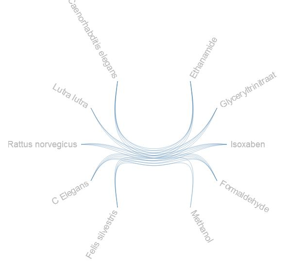
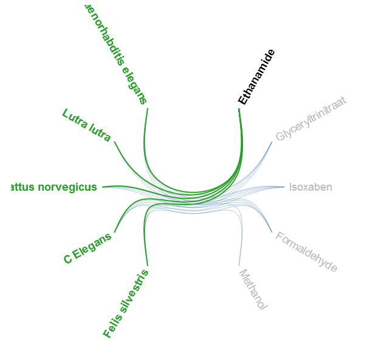
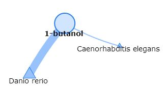
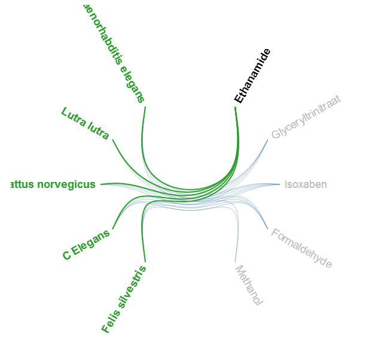
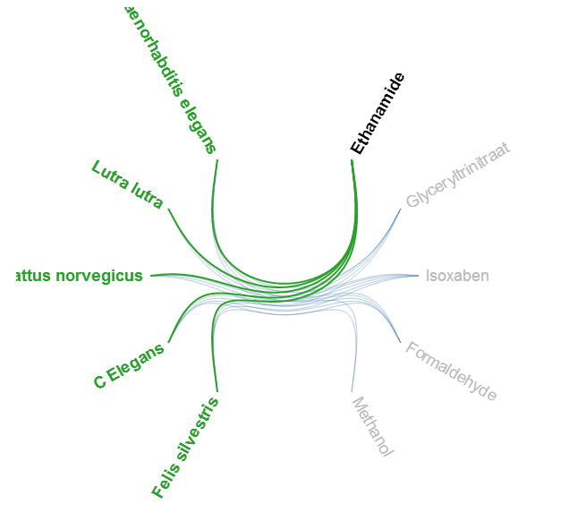

Click on the button above to get instructions about the according functions
The visualization function can be used to see connections between search terms.
To visualize the results, the graph network can be used.
By using this kind of network it is self-explanatory which of the, for example, compounds are connected and which are not.
 
By hovering your mouse over a name, the graph will highlight the lines to which that name is connected.
When you click twice on a name, you will be forwarded to the specific visualisation page. An automatic graph search of the selected name will be shown here.
When you nevigate to this page there will be no graph on the first instance. Once you perform a search, a graph will appear.
This graph will contain the specific compound or organism you've searched for, with the associated compounds or organisms depending on the search you performed.

When you click twice on a oonnection, the shared articles will be shown below.
The goal of the search page is to take the terms you inserted, and search the accordin Pubmed articles. The website will automaticly put every article in our database, and you can use it in the (specific) visualisation.
When you navigat to the page, there will be three buttons. Substance, Organism, and Submit. You click on the buttons what search terms you want to fill in. There will appear a inputfield, where you can insert your searchterm.
If you are done filling in all the terms, you can press the submit button, and the page will do the rest for you. After the page is done loading, you can go to the (specific) visualisation to see the results.

 
